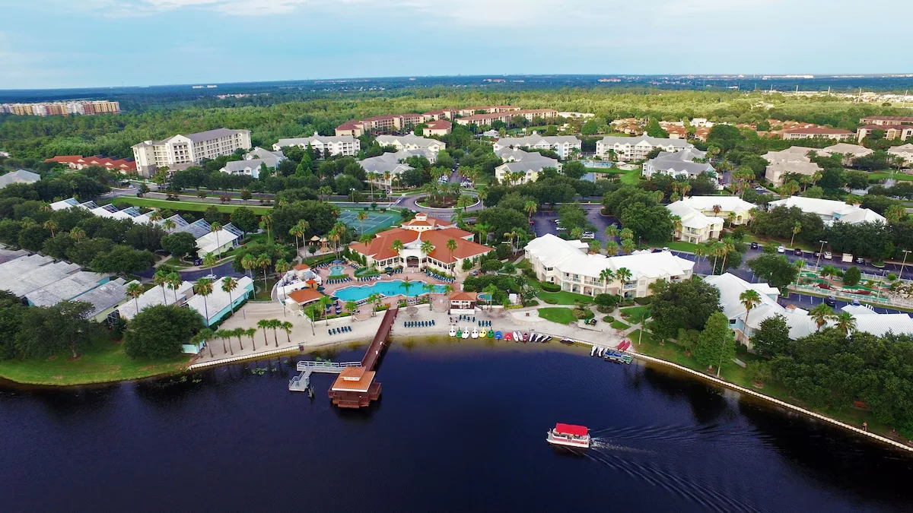

1-Bedroom Condo
$149
Up to 4 guests
Book 1-bedroom condo5 days / 4 nights · 1 or 2-bedroom condo
Experience the perfect Orlando escape with this exclusive, limited-time offer at Summer Bay Orlando. Enjoy spacious accommodations, resort-style amenities, and easy access to world-famous attractions.
Choose your condo
Located just minutes from Walt Disney World, Summer Bay Orlando offers the perfect blend of relaxation and adventure. Each condo features a full kitchen, living area, and private balcony for a comfortable home-away-from-home experience.
Food, hotel stays, and activities. Select any photo to browse the full gallery, organized in that order.
The rooms were a bit older than some resorts but still very good. Nice pools and the hours open were good too
Millino
This was our 5th state at Summer bay, we often come for 1-2 weeks. We love the 500 block buildings overlooking the pond and seeing the pontoon boat! Great wildlife! Our large 2 bedroom suites are always well suited for our family of 5, and even better when we are having 6 for a lady’s trip away! 2 double beds and 1 king with ensuite, pull out couch, large balcony. 2 bathrooms,living/dinning/kitchen/laundry. We like top floor.
The pool area near the 500 buildings is easy to get to,easy to pop back to unit if needing something. This pool has a bar and restaurant…we usually order lunch here. The grounds are very well taken care of.
Janine
There is lots to do here for kids and adults. Our grand children even wanted to be back at the resort halfway through the days at the major parks.
CaptB
Choose your condo above to secure this special offer and start planning an unforgettable Orlando getaway.
Our reservation calendars are updated daily to reflect current openings. The resort will not accept a debit card or credit building cards at check-in.
Licensed and bonded: State of Florida
Book 1-bedroom condo →Book 2-bedroom condo →